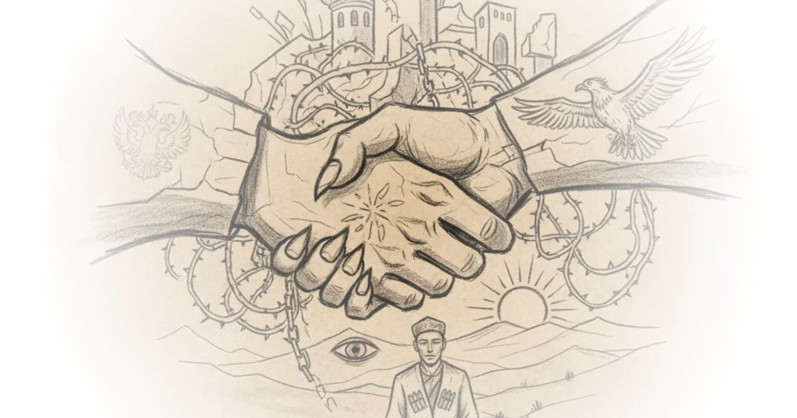

Most geopolitical analysis treats the relationship between Moscow and Astana as a straightforward hierarchy of master and puppet. PolyMatter dismantles this assumption, arguing instead that their alliance is a high-stakes performance designed to mask a fundamental lack of trust. This is not a story about friendship, but a calculated dance of survival where both sides pretend to be allies to avoid a war neither can afford.
The Illusion of Stability
PolyMatter begins by challenging the perception of Kazakhstan as a static, boring autocracy. For decades, the nation appeared frozen under the rule of Nursultan Nazarbayev, a leader who "was no radical" and whose 2019 retirement seemed "relatively uneventful." In reality, this stability was a facade masking deep structural rot. The author notes that while the capital city of Astana looked like "Las Vegas or Dubai," the oil-rich western periphery remained a "vast empty and poor expanse." This inequality was the ticking time bomb that finally detonated in January 2022.

The catalyst was not a grand ideological shift, but a simple economic grievance: a fuel price hike. PolyMatter writes, "when the dam holding back this anger finally broke it started pouring in from all directions." The subsequent chaos forced the government to make an unprecedented move: inviting thousands of foreign troops from the Collective Security Treaty Organization to restore order. While many assumed this signaled the end of Kazakhstan's sovereignty, the outcome was far more nuanced.
"Putin saved tov's political if not physical life... but strangely that's not what happened. The troops left 2 weeks later and if tov owed a debt to Putin he never repaid it quite the opposite in fact."
This observation is the piece's pivot point. Rather than becoming a subservient client, Kazakhstan's leadership immediately pivoted to assert independence, refusing to recognize Russia's annexation of Ukrainian territories. The author argues that this defiance was not a betrayal, but a fulfillment of a different kind of bargain.
A Dysfunctional Marriage
The core of PolyMatter's argument is that the relationship is best understood as a "dysfunctional marriage." Moscow tolerates Astana's independence only so long as it stays within Russia's sphere of influence, while Astana pretends to be an ally to avoid being swallowed whole. The author explains that after the Soviet collapse, Kazakhstan had roughly twenty years to build a distinct national identity before Russia's imperial ambitions resurfaced. By 2014, with the invasion of Crimea, the window was closing.
PolyMatter highlights a chilling moment where Vladimir Putin implied Kazakhstan was an artificial construct, "praising him for creating quote a state in a territory that had never had a state before." This was not a compliment but a threat, suggesting the border was unnecessary. In response, Kazakhstan has engaged in a quiet but aggressive nation-building project, including shifting its capital north to exert influence over ethnic Russian populations and transitioning its language from Cyrillic to Latin script.
"The goal after all is to keep some amount of Freedom Kazakhstan has no desire to become bellarus moscow's puppet so when tov found himself losing control during the 2022 unrest for example he had no choice but to turn to Russia."
This dynamic creates a precarious balance. Russia needs Kazakhstan to remain stable and within its orbit to project power, while Kazakhstan needs Russia's security umbrella to prevent internal collapse. However, the author points out that the red lines are never clearly drawn. Both sides constantly test the other's tolerance. Critics might note that this analysis underestimates the leverage China holds over Kazakhstan, which could eventually force Astana to choose between its northern and eastern neighbors. Yet, the immediate threat from Moscow remains the most pressing variable.
The Performance of Power
The most striking element of PolyMatter's coverage is the focus on the performative nature of diplomacy. The author notes that Putin has visited Kazakhstan more than any other country, yet the two leaders often forget each other's names or titles during public appearances. These are not mistakes but "signature power moves" designed to keep the subordinate off-balance. The relationship is a carefully rehearsed script where both actors know their lines but despise the plot.
"President which anyone familiar with Putin's Antics will recognize as one of his signature power moves whatever these two countries are what they aren't are allies."
The tension is escalating. With Russia feeling internationally isolated, it has become more sensitive to slights, with figures like Dmitry Medvedev openly suggesting Kazakhstan's territory should be "returned to Russia." Meanwhile, Kazakhstan is doubling down on its sovereignty, with President Tokayev recently speaking to Putin in Kazakh rather than Russian—a symbolic rejection of Moscow's cultural dominance.
"Moscow gave Kazakhstan its independence and it could just as easily take it away."
This looming threat hangs over every interaction. The author suggests that the current status quo is preferable to war for both sides, but the margin for error is shrinking. As Russia's expansionist rhetoric grows more aggressive, Kazakhstan's need to assert its distinct identity becomes more urgent, risking a miscalculation that could shatter the illusion.
Bottom Line
PolyMatter's strongest contribution is reframing the Russia-Kazakhstan alliance not as a failure of diplomacy, but as a successful, albeit tense, strategy of containment. The argument's biggest vulnerability lies in its reliance on the assumption that both sides will continue to act rationally; in an era of heightened nationalism, miscalculation is a distinct possibility. Readers should watch for the next public display of defiance from Astana, as it will likely signal how close the region is to the breaking point.